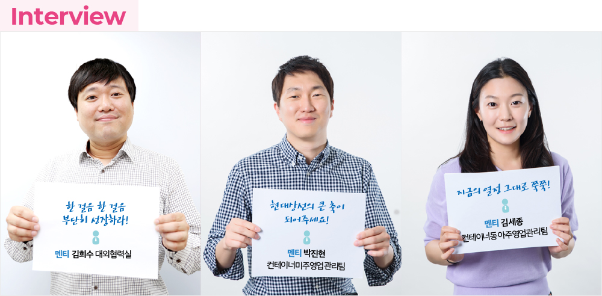
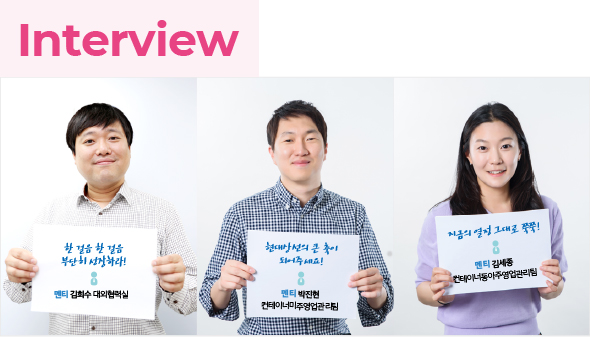
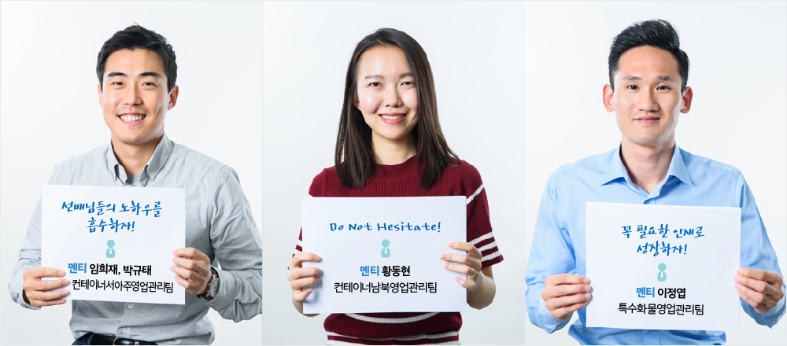
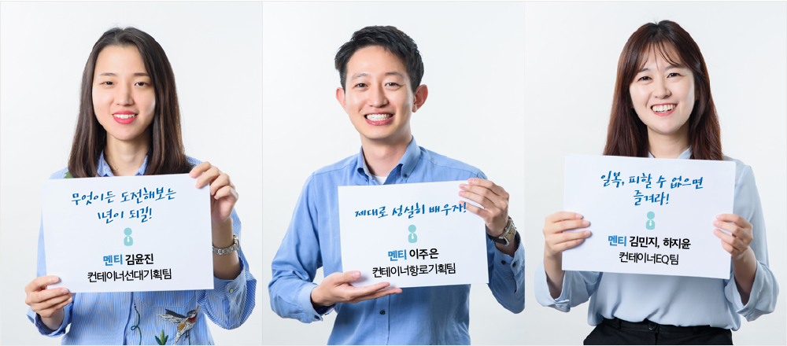
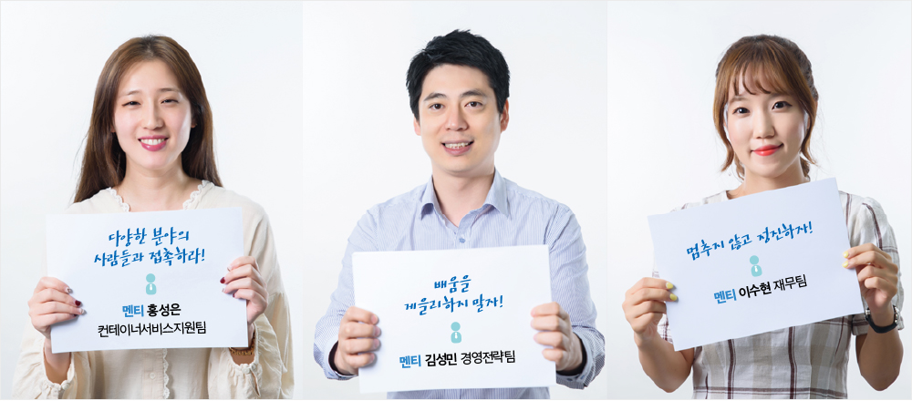
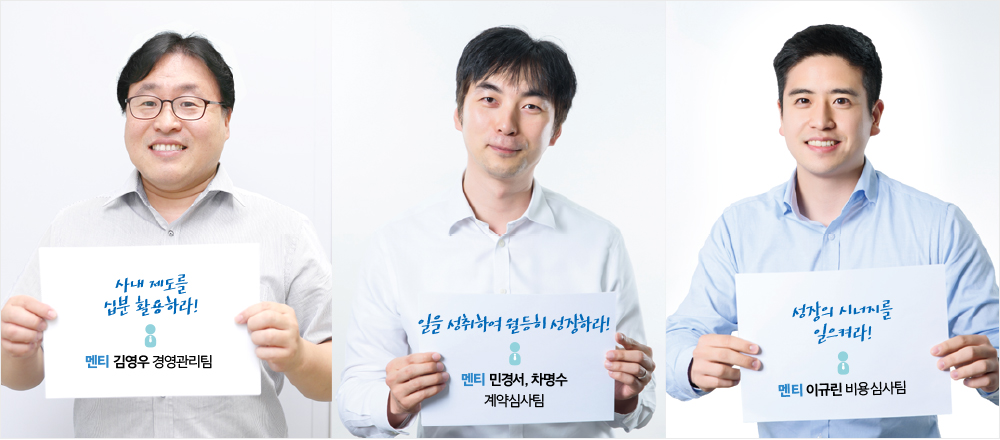
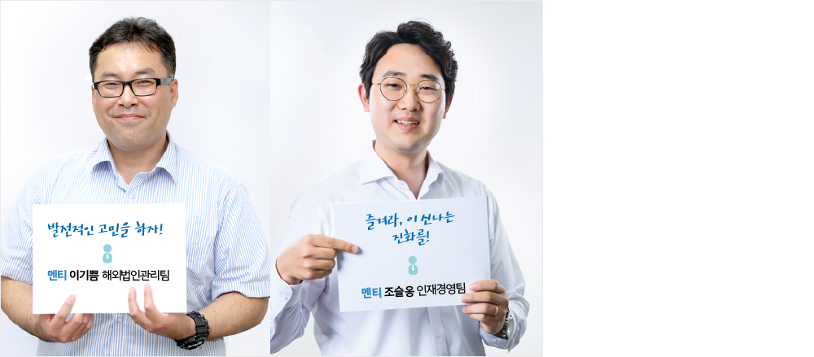

와 제 롤모델이 잡스에요!!! 아이폰 첫 출시되고 나서부터 계속 아이폰 쓰고 있는데 잡스가 너무 그리워요ㅠㅠ 지금은 돈만 벌려고 하는 것 같아서 디자인 발전도 없고ㅠㅠ와 제 롤모델이 잡스에요!!! 아이폰 첫 출시되고 나서부터 계속 아이폰 쓰고 있는데 잡스가 너무 그리워요ㅠㅠ 지금은 돈만 벌려고 하는 것 같아서 디자인 발전도 없고ㅠㅠ와 제 롤모델이 잡스에요!!! 아이폰 첫 출시되고 나서부터 계속 아이폰 쓰고 있는데 잡스가 너무 그리워요ㅠㅠ 지금은 돈만 벌려고 하는 것 같아서 디자인 발전도 없고ㅠㅠ와 제 롤모델이 잡스에요!!! 아이폰 첫 출시되고 나서부터 계속 아이폰 쓰고 있는데 잡스가 너무 그리워요ㅠㅠ 지금은 돈만 벌려고 하는 것 같아서 디자인 발전도 없고ㅠㅠ와 제 롤모델이 잡스에요!!! 아이폰 첫 출시되고 나서부터 계속 아이폰 쓰고 있는데 잡스가 너무 그리워요ㅠㅠ 지금은 돈만 벌려고 하는 것 같아서 디자인 발전도 없고ㅠㅠ
스페셜 인터뷰
2018 신입사원 멘토링 성공리에 마침
멘토 18인의
‘생산적인 뒷담화’
2018 신입사원 멘토링 프로그램이 지난 3월부터 5월까지 진행됐다. 멘토 1명과
신입사원 1~2명을 매칭, 총 20개 조 44명이 3개월간 스승과 제자의 연을 맺으며
직무, 조직문화 등에서 맞닥뜨릴 난제를 함께 풀어나갔다. 이제 막 스타트라인을 박차고
나온 멘티들의 화두는 자연스럽게 더 넓고 높은 세상으로 향한다. 멘티의 잠재력을 발견하고
격려하며 성장을 도와온 멘토들을 만나, 날 것 그대로의 후일담을 들어봤다.
하나의 목표를 향해 팀을 이룬 이들은 100일 동안 어떤 시간을 보내왔을까?
글
윤진아
사진
김선재


-
김성민 대리 대외협력실
멘토링 제도를 통해 평소 회사에서 하기 어려운 활동을 할 수 있어 즐거웠습니다. 알고 보니 동문 사이였던 멘티와 함께 모교를 찾아 ‘벚꽃 인생샷’도 남겼죠. 항상 준비하고 있는 자세가 기특한 김희수 멘티는 저로 하여금 “인재다, 인재!”라는 감탄사가 절로 나오게 했는데요.(웃음) 자신의 업무에 관한 한 최고의 전문가가 되고자 하는 당찬 후배가 머지않아 업계 최고의 전문가로 성장할 거라고 믿습니다.
-
견병현 대리 컨테이너미주영업관리팀
패기 넘치는 신입사원과 함께한 100일 동안 저 역시도 많은 에너지를 얻을 수 있었어요. 더 잘 챙겨주지 못해 미안하지만, 진현이도 잠시나마 즐거웠길 바랍니다. 제 멘토링의 목표는 팀 사람들과 잘 어울릴 수 있도록 돕는 것이었어요. 멘티가 워낙 밝고 명랑한 성격이어서 스스로 잘 어울려 대견했죠. 평소 활동적인 걸 좋아하는 멘티와 야구, 양궁, 사격과 같은 액티비티를 함께 즐기며 친해졌습니다.
-
강지숙 대리 컨테이너동아주영업관리팀
100일이라는 시간이 순식간에 지나가버려 계획했던 걸 다 못 해준 게 아쉽네요. 틈틈이 식사를 함께하며 ‘밥심’을 키워주겠다는 계획만큼은 비교적 잘 완수한 것 같아요. 신입사원이지만 경력이 있어서 그런지 늘 함께 해왔던 팀원처럼 잘 적응해줘 고맙습니다. 이번 체육대회 땐 김세종 멘티가 복면가왕에 출전해 멋진 공연을 펼쳤어요. 모든 일에 열정을 다하는 멘티인 만큼, 곧 자신만의 포지션을 확고히 다질 거라 믿습니다.

-
이승준 사원 컨테이너서아주영업관리팀
가장 먼저 저는 임희재·박규태 멘티가 동기나 선배들과 점심식사&티타임 등의 자리를 많이 가질 수 있게 했어요. 사람들과 어울리며 여러 의견을 모으는 시간을 갖게 하고 싶었어요. 제가 시간이 흐를수록 확신을 갖게 된 게 바로 ‘먼저 경험한 이들의 조언을 귀담아 듣자’는 것이거든요. 오랜 세월 응축된 노하우를 분석한 가이드라인일 테니, 피가 되고 살이 되는 조언들을 현명하게 활용하길 바랍니다.
-
조경아 사원 컨테이너남북영업관리팀
멘토링 기간에 많은 대화를 나누면서 친한 선후배 사이가 된 것 같아요. 멘토로서 어떤 도움을 줄 수 있을까 고민하는 과정에서 저 또한 좀 더 나은 사람이 된 것 같고요. 멘티와 함께 향수를 만들던 향기로운 추억도 떠오르는데요. 황동현 멘티의 속 깊은 이야기를 들어볼 기회였어요. 회사생활을 하다 고민이 생길 땐, 주위 사람들에게 조언을 구해보세요. 귀 활짝 열고 들어주고 어떻게든 도움이 돼줄 동료가 곁에 있으니까요!
-
신민석 대리 특수화물영업관리팀
저는 ‘멘토’보다는 ‘튜터’의 자세로, 업무와 관련된 내용은 물론이고 팀원들의 신상정보까지 폭넓은 주제를 다뤘죠.(웃음) 이유는 단 하나, 업무의 유연성과 사고의 확장을 위해서는 팀 구성원 개개인의 성향을 인정하고 배울 점을 캐치하는 지혜가 필요하거든요. 저를 신세계로 인도해준 방탈출 게임을 통해 그동안 몰랐던 멘티의 재주와 기지도 오롯이 느낄 수 있었는데요. 앞으로 즐겁게 회사생활 할 수 있겠다는 확신이 생겼습니다.

-
김항아 대리 컨테이너선대기획팀
저는 공방에 가서 함께 명함지갑을 만들었던 게 기억에 남아요. 영민한 김윤진 멘티는 아마도 명함지갑 안에 자신만의 다짐을 꾹꾹 눌러 담았으리라 생각해요. 저도 처음 현대상선 명함을 받아들고 다짐한 게 있어요. 조직은 물론이고 나 자신도 한번 최고가 되어 보자는 거였죠. 김윤진 멘티의 빛나는 초심을 현실로 만들 수 있도록 구체적인 세부계획을 세우고, 사명감과 끈기를 갖고 실행에 옮기길 바랍니다.
-
김도균 사원 컨테이너항로기획팀
저는 ‘젊은 꼰대’가 되지 않기 위해 최대한 멘티의 의사를 존중하려고 주의를 기울였습니다. 저는 함께 체험했던 VR 게임장이 기억에 남아요. 제게는 첫 경험이어서 더욱 특별했을 수도 있지만, ‘재미+대화’의 시너지란 정말이지 엄청나더라고요.(웃음) 회사생활이 늘 내 생각과 같을 순 없겠지만, 주체성을 가지고 작은 일부터 한 단계 한 단계 초석을 쌓아나가면 언젠가는 멘티의 목표에 도달할 겁니다.
-
박민선 대리 컨테이너EQ팀
사실 우리 팀이 일 많기로 소문난 부서예요. 멘티들과 함께 예매해둔 야구경기에 일이 늦어져 4회말에야 겨우 도착했죠. 다음엔 꼭 ‘칼퇴’하고 1회초부터 맘 편히 즐기자는 약속은 꼭 지키겠습니다. 일적으로 힘든 만큼, 멘티들이 업무 외적으로는 스트레스를 덜 받게 하려고 노력했어요. 설령 일 때문에 혼나더라도 너무 상심하지 말라고도 조언했죠. 상사는 업무처리에 대해 비판하는 것이지 개인의 역량을 비난하는 게 아니니까요.

-
김효영 사원 컨테이너서비스지원팀
우리 팀원이 워낙 많은 편이라서 사람들과 교류할 기회를 자주 마련해 멘티가 팀에 잘 스며들 수 있도록 도왔습니다. 팀내 소모임인 와인동호회에도 초대했어요. 대학로, 명동에서 함께 와인 마시며 나눴던 이야기들이 멘티에게도 즐거운 추억으로 남았으면 좋겠네요. 제가 마음편히 휴가 다녀올 수 있게 감동의 손편지를 써줄 정도로 세심한 멘티가 지금처럼‘홍성은 답게’ 잘 적응해나갔으면 좋겠습니다.
-
김천두 과장 경영전략팀
의왕 ICD로 견학 갔던 날, 마치 소풍 가듯 즐거워하던 멘티의 모습이 잊히질 않네요. 백문이 불여일견이라고, 컨테이너의 실물과 흐름을 직접 보며 실무지식을 함양하길 바랐죠. 아직은 회사에 기여할 수 있는 일은 제한적이겠지만, 두 눈 크게 뜨고 업무 메커니즘을 파악하며 매사에 적극적으로 임하길 바랍니다. 이미 많은 역량을 가진 김성민 멘티가 나날이 성장해서 회사에서 중추적인 역할을 할 거라고 믿습니다.
-
강주희 대리 재무팀
저는 선배라는 이유로 내 생각을 강요하지 않겠다는 원칙을 세웠어요. 멘티 스스로 경험하고 판단하게 하되, 멘티의 질문에는 최대한 자세하게 설명해주려고 노력했죠. 재무팀의 조직문화와 업무성격 등을 객관적으로 설명해주면서 멘티가 조직과 업무에 녹아들 수 있도록 돕고자 했습니다. 술 한잔 기울이며 이태원에서 나눈 취중토크에 아이처럼 즐거워하던 멘티를 보며 제 영혼까지 맑아졌던 기억이 납니다.(웃음)

-
김영석 차장 경영관리팀
회사생활에서 중요한 건 인간적인 교감이라고 생각해요. 때로는 사적인 이야기도 나눌 수 있을 정도로 편하게 지내는게 좋겠죠. 멘티와 스크린 골프를 함께하며 대화를 많이 나눴습니다. 골프가 적응력과 집중력을 요하는 스포츠인데, 실력이 일취월장하는 멘티를 보며 잠재력을 엿볼 수 있었죠. 장기적인 성장을 위해 자기계발도 꾸준히 하고, 직무교육, 어학강좌 등 사내에도 유용한 제도가 있으니 잘 활용하기 바랍니다.
-
이건신 과장 계약심사팀
우리는 매달 책을 한 권씩 선정해 읽으며 동서고금의 지혜를 흡수했어요. <일취월장>, <마법의 돈 굴리기>, <더 박스> 세권의 책을 함께 읽으며 저 또한 한 뼘 더 성장한 것 같네요. 본의 아니게 팀장님 지시로 두 멘티가 팀원들 앞에서 책에 대해 발표하는 깜짝 미션(?)을 수행하기도 했는데요. 두 멘티가 그날 발표한 <일취월장>의 내용처럼 팀에서도 스스로도 일을 성취하여 월등히 성장하길 바랍니다.
-
박기태 사원 비용심사팀
2년 동안 팀에 신입사원이 없었어요. 덕분에 제가 막내였는데, 오랜만에 등장한 신입사원을 격하게 아끼지 않을 수 없었죠.(웃음) 저는 멘티와 함께 성장하는 시간이라는 생각으로 멘토링에 임했습니다. 선배님들과 대화 나눌 자리를 많이 마련하려고 노력했어요. 제가 신입사원일 때보다 훨씬 잘해나가고 있는 멘티에게 수고 많았다고 말해주고 싶고요, 앞으로 오래 볼 사이인 만큼 함께 성장하는 관계가 되었으면 합니다.

-
윤종화 차장 해외법인관리팀
해외주재원 생활을 마치고 복귀한 지 얼마 안돼 멘토링에 참여하면서 부담도 컸는데, 돌이켜 보니 제게도 많은 도움이 된 것 같아요. 이기쁨 멘티는 눈앞의 미션들을 책임감 있게 수행하면서도 좀 더 멀리 내다보는 혜안을 가진 것 같아, 언젠가 꼭 한번은 칭찬해주고 싶었어요. 해운업에 대한 전반적인 이해는 기본이고, 다양한 분야에서 발전적인 고민을 거듭하며 지식을 쌓아나갔으면 좋겠습니다.
-
윤원덕 대리 인재경영팀
멘티에게 때로는 형처럼, 때로는 동료처럼 다가가 회사생활에 좀 더 편하게 임할 수 있도록 도와줬어요. 우리 회사가 그리 경직된 조직문화가 아닌데도, 신입이다보니 처음에 멘티가 바짝 긴장해 있더라고요.(웃음) 그래서 일부러 장난도 많이치고, 다른 팀과 연합해 방탈출 게임 같은 새로운 미션에도 도전해봤습니다. 어느덧 정말 아끼는 후배가 된 슬옹이가 이름처럼 슬기롭고 옹골차게 진화하길 바랍니다.
#Tag
- #PI추진팀 #박상훈 #디지털트랜스포메이션
-
최고예요
322
-
좋아요
322
-
슬퍼요
322
-
그저 그래요
322
-
화나요
322